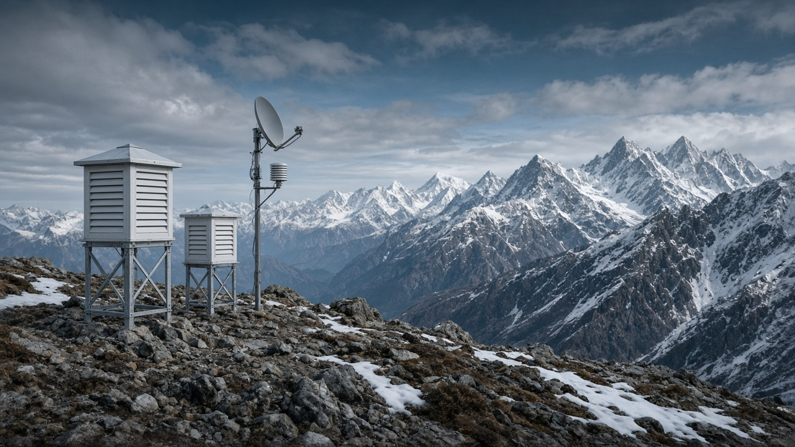
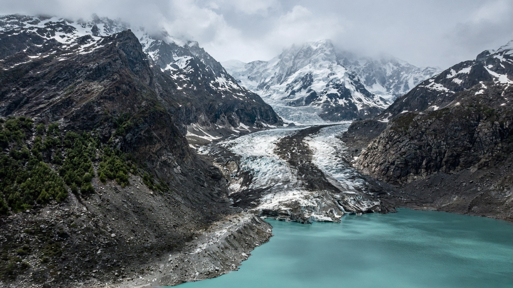

Global Temperature Rise & Historical Records
Published on July 5, 2026
Global temperature rise refers to the increase in Earth's average surface temperature compared with pre-industrial baselines, typically defined as the late nineteenth century. Multiple independent datasets from meteorological agencies, research institutions, and satellite analyses consistently show warming of approximately 1.1 to 1.3 degrees Celsius since that period, with the most rapid increases occurring in recent decades. Each year in the twenty-first century has ranked among the warmest on record, and individual months occasionally exceed prior benchmarks by wide margins. This trend is not a random fluctuation but a sustained shift driven primarily by greenhouse gas emissions and reinforced by feedback processes.
Historical temperature records combine thermometer measurements from weather stations, ocean buoys, and ships with proxy data from tree rings, ice cores, lake sediments, and coral skeletons for periods before instrumental records existed. Paleoclimate research reveals that current warming is occurring at a rate unprecedented in human history and is approaching conditions not seen since before the last ice age. Regional warming varies: land areas, polar regions, and high mountains often warm faster than the global average, which has direct implications for glaciers in the Himalayas, Arctic sea ice, and heat exposure in densely populated lowland cities across South Asia.
Tracking temperature records matters because international climate goals—such as limiting warming to 1.5 or 2 degrees Celsius—are defined relative to these historical baselines. Every fraction of a degree affects the frequency of heatwaves, the intensity of monsoon extremes, and the viability of ecosystems. Transparent reporting through organizations like NASA, NOAA, and the World Meteorological Organization helps policymakers and the public gauge progress and urgency. Understanding how today's temperatures compare with the past clarifies why rapid emission reductions and adaptation investments are necessary to avoid crossing thresholds associated with severe and potentially irreversible impacts.

विश्वव्यापी तापक्रम वृद्धि भन्नाले औद्योगिकरणअघिको आधाररेखासँग तुलना गर्दा पृथ्वीको औसत सतह तापक्रममा भएको वृद्धिलाई बुझिन्छ, जुन सामान्यतया उन्नाइसौ शताब्दीको अन्त्यलाई आधार मानिन्छ। मौसम विज्ञान निकाय, अनुसन्धान संस्था र उपग्रह विश्लेषणका स्वतन्त्र तथ्याङ्कले त्यो अवधिदेखि लगभग १.१ देखि १.३ डिग्री सेल्सियस तापन देखाएका छन्, र हालका दशकहरूमा वृद्धि सबैभन्दा तीव्र भएको छ। एक्काइसौ शताब्दीका प्रत्येक वर्ष रेकर्डमध्येका सबैभन्दा न्यानो वर्षहरूमा परेका छन्, र केही महिनाहरू कहिलेकाहीं अघिल्लो मानकभन्दा धेरै माथि पुग्छन्। यो प्रवृत्ति अनियमित उतारचढाव होइन, बरु ग्रीनहाउस ग्यास उत्सर्जन र प्रतिपुष्टि प्रक्रियाले प्रबल बनाएको निरन्तर परिवर्तन हो।
ऐतिहासिक तापक्रम अभिलेखले मौसम स्टेसन, महासागरीय बोया र पानीजहाजका तापमापक मापनलाई उपकरण अभिलेख अघिका अवधिका लागि वृक्ष वलय, बरफ कोर, ताल तलछेउ र मूंगा कंकालबाट प्राप्त प्रत्यक्ष-अप्रत्यक्ष तथ्याङ्कसँग मिलाउँछ। प्राचीन जलवायु अनुसन्धानले हालको तापन मानव इतिहासमा अभूतपूर्व दरमा भइरहेको र अन्तिम हिमयुगअघिको अवस्था नजिक पुगेको देखाउँछ। क्षेत्रीय तापन फरक हुन्छ: भू-भाग, ध्रुवीय क्षेत्र र उच्च पहाडहरू प्रायः विश्वव्यापी औसतभन्दा छिटो ततिन्छन्, जसको हिमालयका हिमनदी, उत्तरध्रुवीय समुद्री बर्फ र दक्षिण एसियाका घना बस्ती भएका तराई शहरहरूमा ताप प्रभावका लागि प्रत्यक्ष महत्व छ।
तापक्रम अभिलेख ट्र्याक गर्नु महत्त्वपूर्ण छ किनभने अन्तर्राष्ट्रिय जलवायु लक्ष्य—जस्तै तापन १.५ वा २ डिग्री सेल्सियसमा सीमित गर्ने—यी ऐतिहासिक आधाररेखासँग सम्बन्धित परिभाषित हुन्छन्। प्रत्येक डिग्रीको अंशले लु को आवृत्ति, मन्सुन चरम घटनाको तीव्रता र पारिस्थितिकी तन्त्रको व्यवहार्यता लाई प्रभाव पार्छ। नासा, NOAA र World Meteorological Organization जस्ता संस्थाहरूको पारदर्शी प्रतिवेदनले नीति निर्माता र जनतालाई प्रगति र तत्कालता मूल्याङ्कन गर्न मद्दत गर्छ। आजको तापक्रम विगतसँग कसरी तुलना हुन्छ भनी बुझ्नाले गम्भीर र आप्रत्यवर्तनीय प्रभावसँग जोडिएका सीमा नपार्न छिटो उत्सर्जन कमी र अनुकूलन लगानी किन आवश्यक छ भनी स्पष्ट हुन्छ।

वैश्विक तापमान वृद्धि से तात्पर्य औद्योगीकरण-पूर्व आधार रेखा, जो सामान्यतः उन्नीसवीं सदी के अंत को है, की तुलना में पृथ्वी के औसत सतही तापमान में वृद्धि से है। मौसम विज्ञान निकाय, अनुसंधान संस्थानों और उपग्रह विश्लेषण के कई स्वतंत्र तथ्याङ्क लगातार उस अवधि से लगभग 1.1 से 1.3 डिग्री सेल्सियस तापन दिखाते हैं, और हाल के दशकों में वृद्धि सबसे तेज़ हुई है। इक्कीसवीं सदी का प्रत्येक वर्ष रिकॉर्ड में सबसे गर्म वर्षों में रहा है, और कुछ महीनों ने कभी-कभी पिछले मानकों से काफी ऊपर पार किया है। यह रुझान यादृच्छिक उतार-चढ़ाव नहीं, बल्कि मुख्य रूप से ग्रीनहाउस गैस उत्सर्जन और प्रतिपुष्टि प्रक्रियाओं से प्रबलित एक निरंतर बदलाव है।
ऐतिहासिक तापमान अभिलेख मौसम स्टेसन, समुद्री बोया और जहाजों के तापमापक मापन को उपकरण अभिलेख से पहले के समय के लिए वृक्ष वलय, बर्फ कोर, झील सेडिमेन्ट्स और मूंगा कंकाल से के साथ जोड़ अप्रत्यक्ष आँकड़े हैं। प्राचीन जलवायु अनुसंधान दिखाता है कि वर्तमान तापन मानव इतिहास में अभूतपूर्व दर पर हो रहा है और अंतिम हिमयुग से पहले की स्थिति के करीब पहुँच रहा है। क्षेत्रीय तापन भिन्न होता है: भू-भाग, ध्रुवीय क्षेत्र और उच्च पर्वत अक्सर वैश्विक औसत से तेज़ गर्म होते हैं, जिसका हिमालय की ग्लेशियर, आर्कटिक समुद्री बर्फ और दक्षिण एशिया के घने बस्तियों वाले तराई शहरों में ताप प्रभाव के लिए सीधा महत्व है।
तापमान अभिलेखों का अनुसरण महत्वपूर्ण है क्योंकि अंतरराष्ट्रीय जलवायु लक्ष्य—जैसे तापन को 1.5 या 2 डिग्री सेल्सियस तक सीमित करना—इन ऐतिहासिक आधार रेखाओं के सापेक्ष परिभाषित होते हैं। हर डिग्री का अंश लु की आवृत्ति, मन्सुन चरम घटनाओं की तीव्रता और पारिस्थितिक तंत्र की व्यवहार्यता को प्रभावित करता है। नासा, NOAA और World Meteorological Organization जैसे संगठनों की पारदर्शी रिपोर्टिंग नीति-निर्माताओं और जनता को प्रगति और तात्कालिकता का आकलन करने में मदद करती है। आज के तापमान का अतीत से तुलना करना समझाता है कि गंभीर और आप्रत्यवर्तनीय प्रभावों से जुड़े सीमा पार करने से बचने के लिए तेज़ उत्सर्जन कमी और अनुकूलन निवेश क्यों आवश्यक हैं।